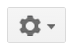

The Social Web
The Social Web is an umbrella term referring to the more social experience that started to emerge on the Web in the early 2000's. Before that, the Web was static and isolated, in the sense that the only connections were links to other web pages, but one couldn't comment or like someone's page, collaboratively work on a page, include content from other pages with widgets, or easily share content from other websites. These features were introduced one by one through the 2000's, and named as Web 2.0 technology.
Nowadays, we take the Facebook Like button, the inclusion of YouTube videos or Google Maps in different pages as granted, but these all occured in the last few years. The improvement and acceptance of Javascript is the what enabled this change, and all major web companies (Google, Facebook, Twitter, Amazon, ets.) offer APIs that web developers can use to incorporate those companies' data and web services into their own websites.
We can observe different ways of incorporating the social web components into usual websites.
- Social icons - these are recognazible icons that suggest a link to the social web presence of the website. The image below shows Wellesley's social presence. Every icon is a link to the corresponding account on the service.
- Social Widgets - these are pieces of HTML/CSS/Javascript code that one can be easily embedded onto a web page and usually display content from a certain website. Examples are the Twitter feed, Facebook comments and the like/share buttons, YouTube videos, Google Forms, etc.
- Web Services - web services allow a developer to not only display content from another web provider, but also to tailor that content and interaction with it to the needs of their website users. This requires different levels of Javascript programming, depending on the complexities of what needs to be achieved. For example, simply showing a Google Map centered on an adress is very simple, however, allowing a user to calculate the route and see location icons and more needs the use of Google Maps API methods.
Social Icons for Social Presence
The easiest way to connect to the Social Web and signalize one's participation in it is through social icons. These are links that will take one directly to the social presence on a certain website, to Facebook, Twitter, LinkedIn, YouTube, etc.
Incorporating such icons is extremely easy. Usually one finds the images of the icons on the web and wraps links around them. Below is the example of the HTML snippet from Wellesley's website:
<a href="http://www.twitter.com/wellesley"><img alt="Wellesley College Twitter" src="/sites/default/files/assets/global-content/images/twitterbutton.gif" style="padding-top:2px; padding-right:5px; padding-left:5px; padding-bottom:2px;" /></a>
Using images as icons is not the only way to create a social icons bar. Icons can be fonts too. You have already seen such examples in HW7 and HW8 (the shopping cart and the home icon). They were inserted in the page through CSS and are part of the FontAwesome series of web icons.
This example page contains a social icons bar created with FontAwesome fonts. The reason for using such fonts is that they allow one to color the icons in the same color palette as the website, to avoid distraction from the colorful images of each image icon. However, since the icons are fonts, one can change their appearance at will with CSS. Click on the button on the page to see the effect.
Using FontAwesome Icons
Here is a list of steps to include icons like this in your page:
- Link to the CSS stylesheet of FontAwesome, in the same way you do for Google Fonts.
<link href="http://maxcdn.bootstrapcdn.com/font-awesome/4.2.0/css/font-awesome.min.css" rel="stylesheet">
<a href="http://twitter.com/wellesley"><span class="fa fa-twitter"></span></a>Notice that we have supplied two class names for the class attribute.
fafor all your icons, allows you to make them look the same way. The specific class is then used to insert the content of the icon in the HTML, through this CSS rule:
.fa-twitter:before{
content: "\f081"; /* icon for twitter-square */
}
This is all you need to do. The :before pseudo-element, is a CSS3
pseudo-selector that manipulates the content of an HTML element in the page, similar
to :first-letter that we have seen in the past. Read more about
:before in W3Schools.
Social Widgets
The social icons will redirect a user from the current website to another one and often you might not desire this. What is better is to bring your content (or that of someone else) into your own pages through social widgets.
For example, the Facebook Like button allows both to perform the action of liking a page, but also that of conveying the information of how many other people have done so and potentially the identities of these people if they are in your circle of friends.
Incorporating social widgets in a website cannot be done without visiting the websites and help pages of the web applications that offer such widgets. Some of them make it very easy to do this. Here are some examples:
- Adding a YouTube video - Visit the page of the video, click on the link
Share, then the link Embed and copy the provided HTML code into your page. For example:
<iframe width="560" height="315" src="//www.youtube.com/embed/8zLx_JtcQVI" frameborder="0" allowfullscreen></iframe>
<iframe>is an HTML tag that allows to embed content from other pages onto a page. It can take several attributes that will customize the experience. For example, to have the video start on its own, you addautoplay=1. The documentation for such widgets, usually provides the list of all possible attributes that can be added to the<iframe>tag. - Adding a Google Calendar - Open the Calendar, click on upper-right icon
 and choose Settings. This opens a new page titled
Calendar Settings
. Choose the tabCalendars
, and click on the link of the calendar you want to share on the web. This opens a new page with the details of this calendar. Scroll down to find the fieldEmbed This Calendar
. There you'll find the<iframe>tag again with the HTML code you need. See an example of how this looks like on Prof. Anderson's web page. - Adding a Google From - Create a Google Form through your Google Docs account. Then click on File | Embed and copy the HTML code snippet.
Adding Google Forms is easy, but they will look like Google Forms on your page and you might not like that. We have created an example to show you how one can customize Google Forms using HTML/CSS/Javascript. The original and modified Google Form is shown in this example page. We have written a short document to explain this process, feel free to contact us if you are having trouble following the instructions.
Another kind of social widgets, such as Facebook Like or Facebook Comments, or Twitter timeline, require a bit more effort. In fact, one would need to interact with these websites, in order to get the needed code to embed in the HTML page. Very often both HTML and Javascript code are needed.
Here is the Javascript code from our plugins examples page to embed Facebook Like and Comments.
<div id="fb-root"></div>
<script>(function(d, s, id) {
var js, fjs = d.getElementsByTagName(s)[0];
if (d.getElementById(id)) return;
js = d.createElement(s); js.id = id;
js.src = "//connect.facebook.net/en_US/all.js#xfbml=&appId=275908045906968";
fjs.parentNode.insertBefore(js, fjs);
}(document, 'script', 'facebook-jssdk'));</script>
Notice that this piece of code contains an appId attribute that belongs to a Facebook app that Eni has created. If you want to see who has liked your page or other statistics from Facebook about social interactions with your page, you will need to go to Facebook Developer, create your own app connected to your Website and then use its app ID. Eni has written some notes that show how to create a Facebook app. You only need to read the first two pages.
In addition to the Javascript code, you also need some HTML code. This code is also generated by Facebook, and you'll need to visit the Developers page to get it. Here are some notes that would help you with this task.
For exmaple, the code for the Facebook Like button will look like this:
<iframe src="//www.facebook.com/plugins/like.php?href=http%3A%2F%2Fcs.wellesley.edu%2F%7Ecs110%2F&width&layout=standard&action=like&show_faces=true&share=false&height=80&appId=275908045906968"
scrolling="no" frameborder="0" style="border:none; overflow:hidden; height:80px;"
allowTransparency="true"></iframe>
Notice how the words on bold are specific to our application (liking the CS110 website). By creating this code through the Facebook page, you'll make sure to use your own website information and Facebook app ID.
Adding a Twitter timeline is very similar, you'll need to have a Twitter account that will allow you to create a widget for a timeline you're interested in. This is the example from our plugins page.
<script>!function(d,s,id){var js,fjs=d.getElementsByTagName(s)[0],
p=/^http:/.test(d.location)?'http':'https';if(!d.getElementById(id)){js=d.createElement(s);
js.id=id;js.src=p+"://platform.twitter.com/widgets.js";
fjs.parentNode.insertBefore(js,fjs);}}(document,"script","twitter-wjs");</script>
<div>
<a class="twitter-timeline" data-dnt="true" href="https://twitter.com/Wellesley"
data-widget-id="450818279653658624">Tweets by @Wellesley</a>
</div>
Web APIs
Another way of incorporating content on your pages is through web APIs. The most common use of that is for inserting Google Maps on a page.
Here is an example of showing the map of Wellesley College, together with some more sophisticated stuff (like location icons and click events for these icons).
The steps for including a Google Maps on your page are the following:
- In your HTML file, you import the Javascript library for Google Maps and create an empty div where the map will show up.
<script type="text/javascript" src="http://maps.google.com/maps/api/js?sensor=false"></script> <div id="map"> </div>
#map {
width: 100%; /* use number or % depending on how big you want the map */
height: 94%;
}
var map; // global variable
// when page is loaded execute this function
window.onload = function() {
// Specify the options for the map
var options = {
zoom: 17,
center: new google.maps.LatLng(42.292581,-71.305517),
mapTypeId: google.maps.MapTypeId.HYBRID
};
// make the map show up in our div with id "map"
map = new google.maps.Map(document.getElementById("map"), options);
Here is an example of how a student in Spring 2014 used Google Maps together with the weather forecast.

For a more sophisticated use of maps (allowing users to enter locations by name), I've written a tutorial for the CS249 Web Mashups course.